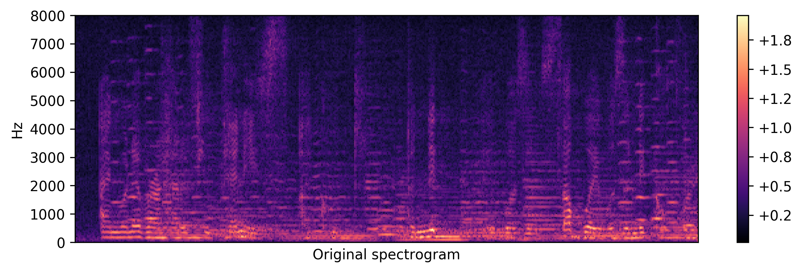

Supplementary MaterialPaper : VoiceID: Speech Enhancement for Robust Speaker Recognition [arxiv] Authors : Suwon Shon, Hao Tang, James Glass Abstract : In this paper, we propose VoiceID loss, a novel loss function for training a speech enhancement model to improve the robustness of speaker verification. In contrast to the commonly used loss functions for speech enhancement such as the L2 loss, the VoiceID loss is based on the feedback from a speaker verification model to generate a ratio mask. The generated ratio mask is multiplied pointwise with the original spectrogram to filter out unnecessary components for speaker verification. In the experiments, we observed that the enhancement network, after training with the VoiceID loss, is able to ignore a substantial amount of time-frequency bins, such as those dominated by noise, for verification. The resulting model consistently improves the speaker verification system on both clean and noisy conditions. System architectureAudio samples
Spectrogram examples (see more spectrograms by epochs)<Original>  <Degraded (Music noise, SNR=0)> <DAE> <Masked (Degraded*Mask)> <Mask> <Residue (Degraded - Masked)> |